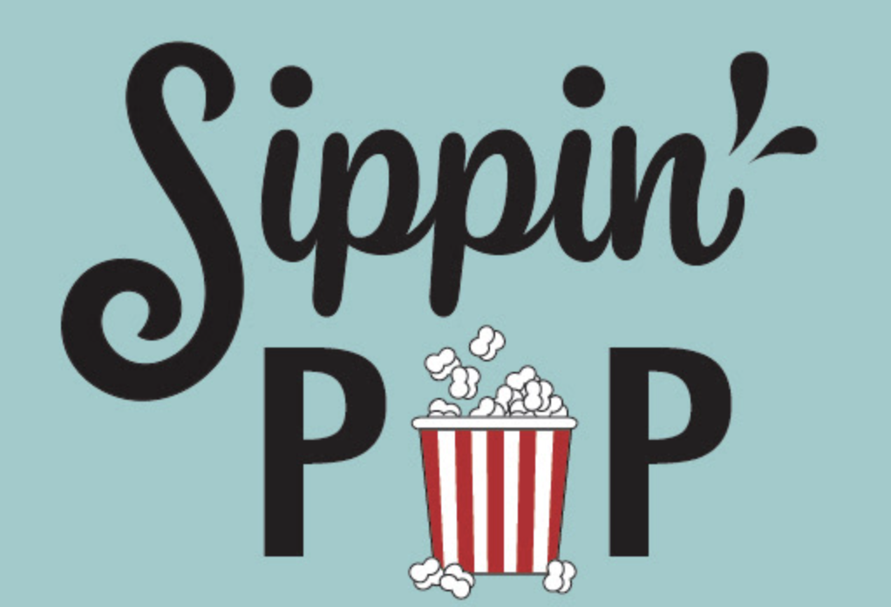
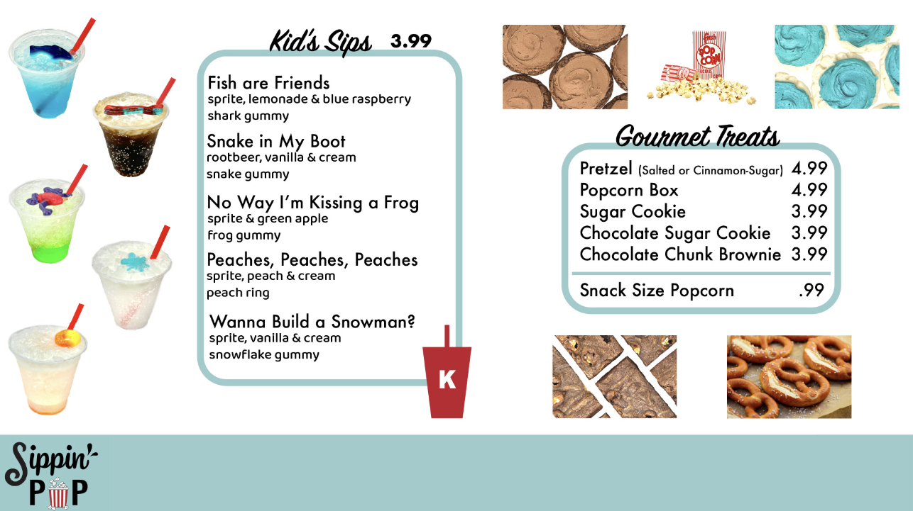
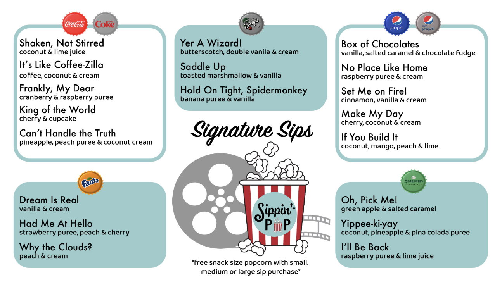
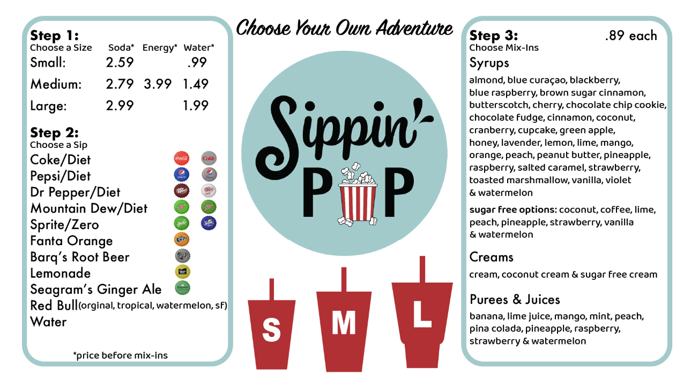
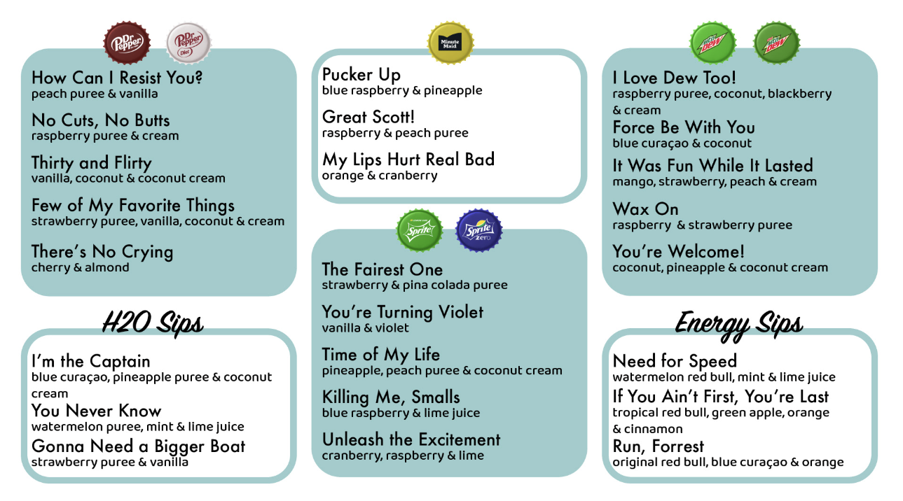
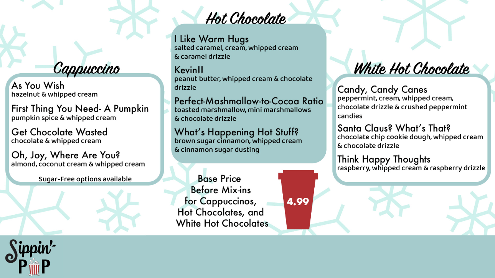

Sippin' Pop
Summer 2022

This logo was originally designed in 2021 for my client, Sippin' Pop. The client requested a script font for "Sippin'" and a geometric font for "Pop," with the "o" stylized as a popcorn bucket. Since this company produces both popcorn and sodas, I incorporated splash elements to form the apostrophe, tying in both products together visually. I have since updated the logo to represent the brand's growth.





These are among the first menu boards I designed for the business. I continue to edit and update them as products evolve, though the overall design stays consistent. All icons, including the cups and bottle caps, were custom illustrated by me, with the photos provided by the business' photographer. Both the menus and the logos were created in Adobe Illustrator.